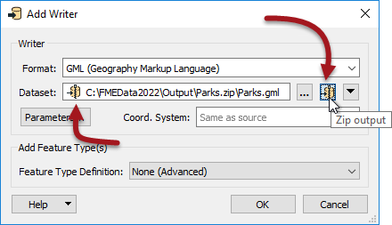
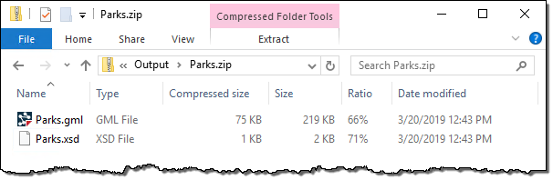

After completing this lesson, you’ll be able to:
Both FME readers and writers are capable of working with compressed, archived files of various formats. As well as a size reduction, these file types are a convenient way to store datasets that need handling as a single unit; for example, a set of multiple dataset files contained within a single zip file.
The dataset a reader reads is defined by the Source Dataset/Files parameter in the Navigator window:
As in the above screenshot, this dataset parameter can point to an archived file. You simply select the archive file in the source parameter, and FME will extract the data when it is being read.
This technique works regardless of whether the archived dataset is file-based (like a single AutoCAD file) or folder-based (like the set of files that make up a Shapefile dataset).
The only difficulty in setting this up is to remember that the file browser does not display archive files by default and that the file extension being viewed must be changed:

Writing data as an archive file is particularly useful for where the output data needs to be post-processed. For example, if you use a shutdown script to move or copy output data to a new location, handling a single archive file is more convenient than multiple data files.
The simplest way to create an archived output is to change the file extension in the output dataset field:

You can also specify the filename to be written inside the archive file. A shortcut button does this for you for Zip format archives:

Notice the small icon in the dataset field that indicates the zipped status.
When the workspace is run, the log file reports the file creation at various points:
MULTI_WRITER: Output will be zipped Zipping contents of temporary dataset Finished updating output zip file: `C:\FMEData\Output\Parks.zip'
...and the output is, indeed, an archived dataset:
